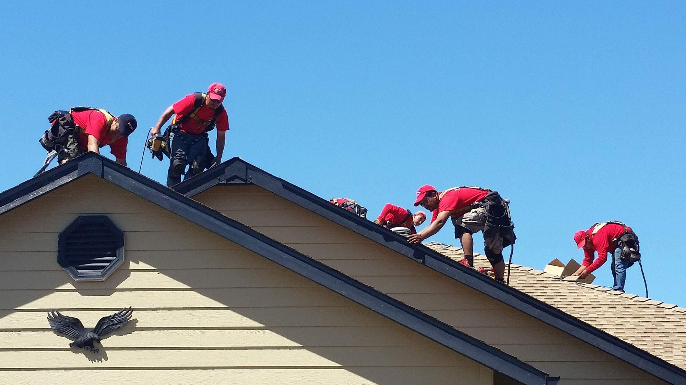

How to Choose a Roofing Company
Whether you are planning to run a small business or start a big one, you need to set up office supplies to start off. You should purchase office supplies that can be easily resold. You should also invest in some basic office supplies, such as pens and paper. Purchasing office supplies is essential for starting a roofing business, and you can use the planner feature in your phone to set up customer appointments. You should also set up an email address dedicated to your business, and order online forms.
Next, make sure to get business insurance. Your business should have Workers' Compensation Insurance and general liability insurance, especially if you are hiring people to work for you. Another important thing to consider is a brand. Your brand will be your company's identity. It will help your business stand out from your competitors. You should consider having your logo designed, and you should also make sure that it's recognizable and easy to remember. Try to keep it simple and memorable.
When you are looking for a roofing company vancouver, it's important to check their website. If they don't have a website, you should steer clear. This means they are either just starting up, or something else is going on. Always read reviews about a roofing company to be sure that you're making the right choice. The information provided on the website should help you make an informed decision. Moreover, it's important to have the best deal.
Finally, choose a legal business structure. A sole proprietorship may want to operate under a different name. A DBA guide will help you with this. In the event that you plan to hire employees, you should consider incorporating a limited liability company or a corporation. The legal business structure protects the owner from personal liability. If you're planning to start an LLC, you can learn how to set up an LLC. There are some services that will help you form a limited liability company.
Whether you're looking for a roofing company in the Sacramento area or in another state, a website is an essential requirement. A company's website will be the best way to find a legitimate contractor. In addition to having a website, a roofing company should also have a social media presence. A website will show its customers that the company is trustworthy. This will help you feel good about hiring them, and make the decision to hire them easier.

A legitimate roofing company should be able to provide several sources online. There are storm chasers who call themselves roofers but are not legitimate. However, the ones that have a solid online presence will be able to provide multiple references and reputable testimonials. If you're unsure about a company's legitimacy, do a little research and look at the reviews of previous customers. If you're not satisfied with their work, you should never do business with them.
A good roofing company should have a website. This will allow you to access their customer service and review their past work. It should also offer insurance. When the company doesn't have insurance, they can't provide the coverage you need. If they're insured, you can be sure that the contractor will be able to pay for any damages that occur during the repair process. This is why you need to ensure that your roofer is licensed, certified, and bonded.
It's also important to have a website. It's not uncommon for homeowners to post reviews about their experiences with a vancouver roofing company. Regardless of the type of business, a website is an essential part of a roofing company's identity and should be secured before anyone else can claim it. There are several things that a roofing company needs to have. Its website should reflect the type of work they perform, as well as their customer service.
In addition to a website, you should have insurance coverage for your roofing company. In case of an accident, it is essential to have an insurance policy for your workers. Besides, your roofer should be able to provide you with a tarp if it rains or snows. Lastly, you should have a logo. A logo is a great way to show your business's identity. If a company does not have one, it doesn't exist.